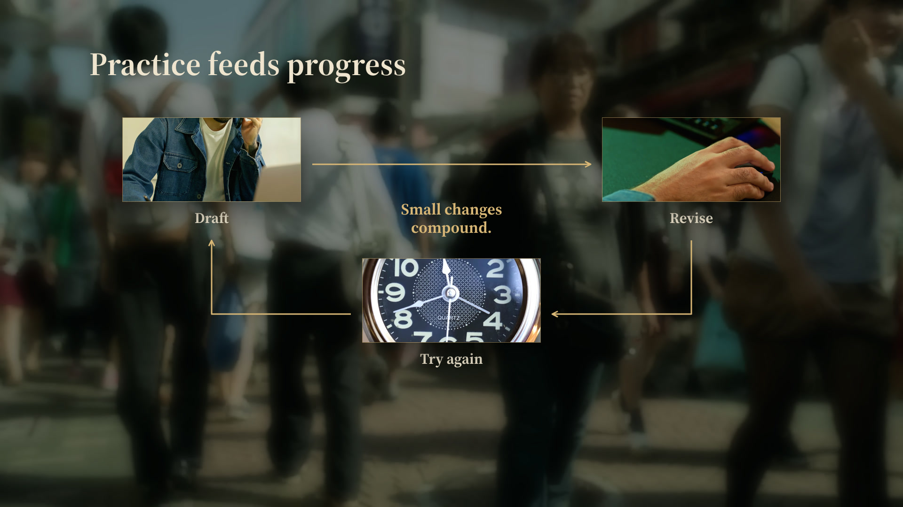
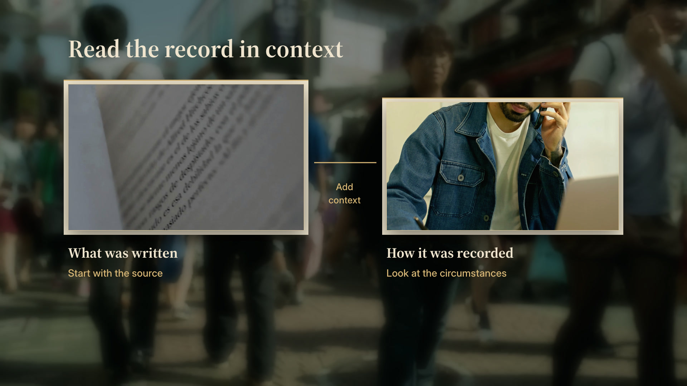
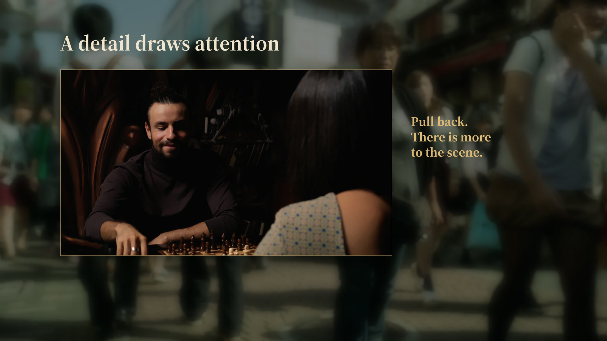

10 / FEEDBACK-LOOPEDITABLE SOURCE

Feedback loop
Show how an action, its result, and the next attempt reinforce one another.
Reveal each node before its connecting edge; close the cycle before the conclusion.
Inputs and reuse
title, three nodes with image and short label, optional conclusion; node0..2/link0..2/conclusion cues
Replace the content and footage, then time the reveals to the narration. Eight seconds is a sample length, not a production rule.
View the inputs
11 / EVIDENCE-COLLAGEEDITABLE SOURCE

Evidence collage
Put a source artifact beside its recording context.
Establish the first artifact, introduce the second, then connect their readings.
Inputs and reuse
title, two source images with label and optional note, optional relation; item0/item1/relation cues
Replace the content and footage, then time the reveals to the narration. Eight seconds is a sample length, not a production rule.
View the inputs
12 / CONTEXT-REVEALEDITABLE SOURCE

Detail into context
Let one continuous image reveal the context missing from a close detail.
Hold the close detail, widen the same image continuously, then reveal the changed interpretation.
Inputs and reuse
image, detail, context, focus, detail_scale, reveal_duration; widen/context cues
Replace the content and footage, then time the reveals to the narration. Eight seconds is a sample length, not a production rule.
View the inputs